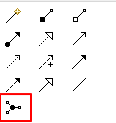
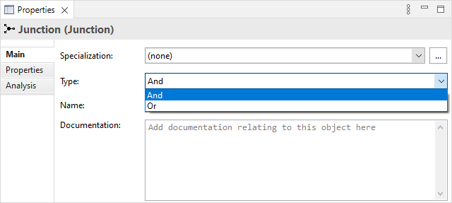
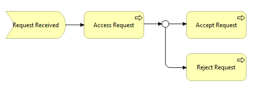

请注意，ArchiMate 目前在连接接合时不强制执行完整的 ArchiMate 规则。您应该确保仅使用相同类型的关系来连接概念和接合。您可以使用 验证器 检查一致性。
请注意，ArchiMate 目前在连接接合时不强制执行完整的 ArchiMate 规则。您应该确保仅使用相同类型的关系来连接概念和接合。您可以使用 验证器 检查一致性。可以从关系调色板部分的视图调色板中添加接合元素：
调色板中的接合
接合在许多情况下用于连接相同类型的关系。一个联结可能有多个传入关系和一个传出关系，一个传入关系和多个传出关系，或者多个传入和传出关系（后者可以认为是两个后续接合的简写）。
有两种类型的连接 - “和”和“或”。 接合的类型可以在属性窗口中设置：
设置接合的类型
接合点出现在“其他”文件夹的模型树中。也可以通过右键单击“其他”文件夹并选择“新建”菜单项将它们直接添加到模型树中。
“或”类型连接的示例
请注意，ArchiMate 目前在连接接合时不强制执行完整的 ArchiMate 规则。您应该确保仅使用相同类型的关系来连接概念和接合。您可以使用 验证器 检查一致性。